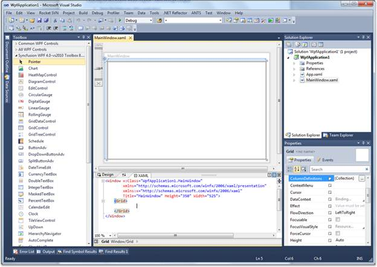
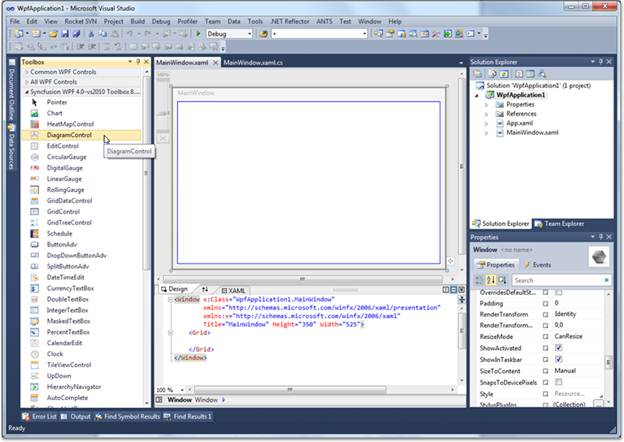
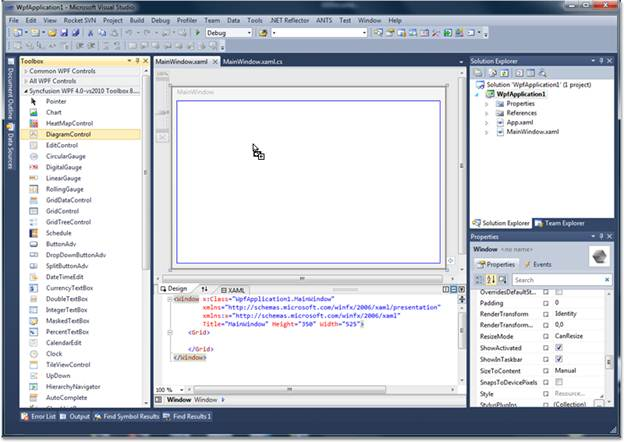
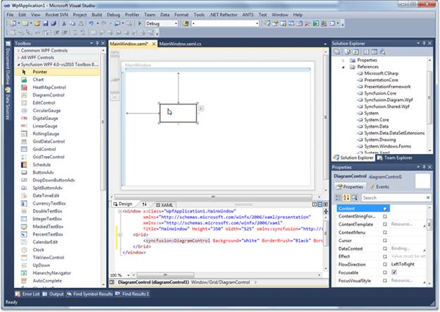

The Diagram Control can be added to the application using designer.
Following are the steps to create Diagram Control through Designer.
1. Open the XAML page of the application

Figure 15: XAML page of the application
2. Select Diagram
Control from ToolBox.

Figure 16: Diagram Control in ToolBox
3. Drag the Diagram
Control onto the Designer.

Figure 17: Draging Diagram Control onto the designer
4. DiagramControl is
added to the Page and also the assembly reference is added to the Project
file.

Figure 18: DiagramControl added to the page
Kindly refer to Add Diagram Model to the Diagram Control and Add Diagram View to the Diagram Control to add the model and view to the control.